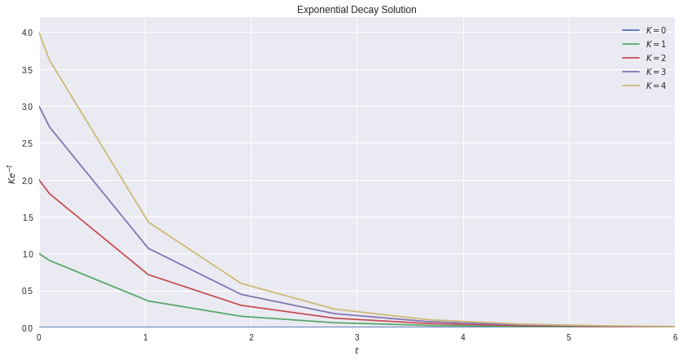

Introduction
I’ve long been interested in modelling biological systems with mathematics. This is going to be a series which goes over how to do that (for simple systems of course).
Single Differential Equation (Decay)
The first differential differential equation we’re going to look at is simple exponential decay: \[ \dfrac{dy}{dt} = -y \]
The solution to this ODE is going to be relatively simple to find:
\[ \begin{aligned} \dfrac{dy}{dt} &= -y \\ - \int \dfrac{1}{y} dy &= \int 1 dt \\ - ln(y) + k_{1} &= t + k_{2} \\ ln(y) &= -t + k_{3} \\ y &= Ke^{-t} \end{aligned} \]
In this case, we have one parameter that we dont know, and that is the value of \(K\). We can find this with an initial condition. So for example if \(y(0) = 1\) then we’d have that
\[ \begin{aligned} y(0) &= 1 = Ke^{-0} \\ 1 &= K \end{aligned} \]
Cool. Now let’s see how we can build this model and plot the solution:
First thing we need to work through is how to define the model. We’ll be using solve_ivp rather than odeint from the scipy.integrate library. Why? Because odeint is now outdated. I’ll provide a refrence to this later.
In the case of solve_ivp, we need to create our model with three things:
- \(t\): The time
- \(y\): The variable
- Other arguments
At this second, we’re going to ignore that last thing, because it’s not necessary for us (yet).
Here’s how we can model decay:
Now that we have our model created, we can feed it into solve_ivp. To do this, we need to determine a few things. Specifically:
t_span: The time over which we want to evaluatey0: The initial value of our functiondense_output: Whether we want our output to be smooth
Now there are many other options in solve_ivp, but for now we’ll go over these, just so we can get familiar.
We can set the t_span to be from \(t = 0\) to \(t = 10\), which we denote with a tuple. We can set our initial value to be 1 (like we showed above), and we want a dense output. Just to throw a curve ball in there (and not put ourselves to sleep) I’ll solve it for a variety of different initial values:
Code
solution_array = list()
fig, ax = plt.subplots(figsize = (14,7))
for i in range(0, 5):
solution = solve_ivp(fun = decay_model,
t_span = [0, 6],
y0 = [i],
dense_output=True)
ax.plot(solution.t, solution.y[0], label = fr"$K = {i}$")
ax.set_title("Exponential Decay Solution")
ax.set_ylabel(r'$Ke^{-t}$')
ax.set_xlabel(r'$t$')
ax.set_xlim(left = 0, right = max(solution.t))
ax.set_ylim(bottom = 0)
ax.legend()
plt.show()
Now I realize, this was extremely exciting and you just can’t wait for more. Don’t worry, next time we’ll implement an SIR model. And maybe mess with the populations a bit.